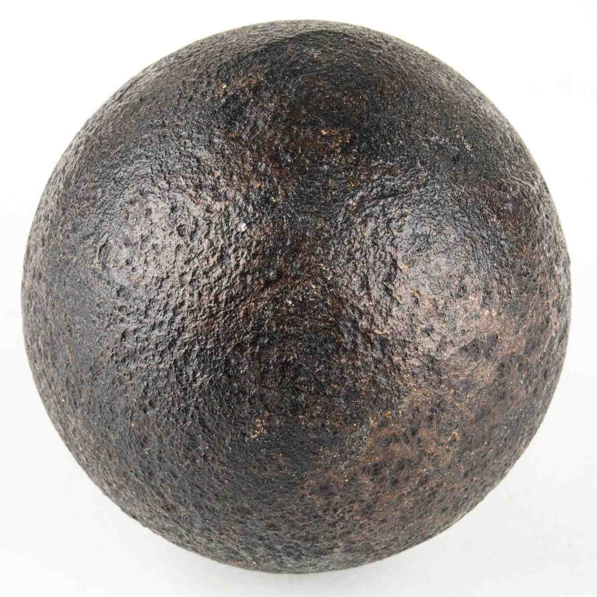

Boulet Plein
Le boulet plein était le projectile le plus commun de l'artillerie historique. Fabriqué en fonte de fer, il était principalement utilisé pour sa force de percussion contre les fortifications et les navires.
- Poids : 4 à 36 livres
- Période d'utilisation : XVe - XIXe siècle
- Efficacité maximale : 800-1000 mètres
